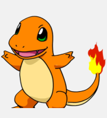

Luzes, Câmera, Ação!
Idealização e construção do projeto e Criação de Favo de Colméia
DESIGN THINKING (DT)
Quinta-Feira - 04, 11 e 18 de Abril de 2024
Inicialmente, em equipe, os Favos das Coméias das habilidades foram construídos. De modo geral, os seguintes pontos foram executados durante as aulas:
Execução/Objetivos:
A seguir, veja imagens do resultado obtido após colocar em práticas os itens citados anteriormente. Todas as ideias foram levantadas com a participação/colaboração de todos. (se desejar analisar a imagem ampliada, basta clicar na imagem)

Idealização do Projeto
Quinta-Feira - 04, 11 e 18 de Abril de 2024
Durante a inicialização do projeto, uma ideia passou a ser elaborada e as habilidades que seriam aplicadas foram escolhidas. No caso, selecionamamos uma habilidade de História
e uma Habilidade de Física.
É importante ressaltar que também devíamos considerar outras duas Habilidades (EM13MAT101) e (EM13P16) - para o vídeo e o roteiro.
O ponto de partida para a criação do projeto estaria na construção de UM COFRE. O objetivo do projeto estaria em abrir o cofre (apresentaria uma senha) após
uma série de instruções e desafios oferecidos pelo vídeo a ser elaborado, que combinaria uma série de informações históricas e teóricas sobre conteúdos de física (no caso, algo relacionado com óptica, infravermelho, etc.). Veja a seguir,
um esboço da ideia inicial.

Na imagem abaixo será apresentado o resultado da discussão e o mapa de ideias desenvolvido:
A apresentação das ideias foi gravada e pode ser assistida no próximo vídeo:
Antes da tomada de decisão final, outras ideias também foram consideradas, como é possível analisar no mapa mental desenvolvido a seguir. O vídeo contendo a apresentação vem em sequência. Em resumo, abordaríamos algumas questões de desperdício, balança, etc., mas no final, esta ideia foi descartada.
Com tudo isso, a ideia do Projeto 3 será a aplicação do conhecimento passado em vídeo para solucionar a necessidade de abrir o cofre. Teremos algum tipo de experimento envolvendo conceitos da física, o qual as pessoas precisarão raciocinar com base no conhecimento/conteúdo oferecido no vídeo para conseguir alcançar o objetivo.
Inspiração
A ideia foi inspirada na cena do filme "Homem Formiga" que pensa na tentativa de abrir o cofre e percebe que ele é feito com o mesmo material do Titanic, então ele joga algo que gerará o material e consegue assim, abrí-lo.
Narrativa Desenvolvida/Contexto Histórico/Físico
Segunda-Feira - 01, 15 e 22 de Abril de 2024
Em uma cidade do ABC Paulista existia um enigmático cofre que guardava uma valiosa ferramenta de ensino que poucos tinham o privilégio de poder abrir, então, após um difícil processo de seleção 5 pessoas puderam tentar abrir o cofre, são eles Alex, Victor, Jennyfer, Júlia e Luana. Mas o segredo para abrir este cofre não estava apenas na força bruta ou na astúcia, mas sim na compreensão da teoria das cores. Portanto, prestem bem atenção no que vem a seguir:
A teoria das cores tem raízes históricas profundas, mas ganhou destaque significativo com Isaac Newton no século XVII, quando ele dividiu a luz branca em um espectro de cores visíveis. Posteriormente, artistas como Johann Wolfgang von Goethe e cientistas como Hermann von Helmholtz desenvolveram teorias mais complexas sobre a percepção e a composição das cores. A compreensão das cores continuou a evoluir com o tempo, influenciando diversos campos, como arte, design, psicologia e ciência.
Isaac Newton, um dos cientistas mais influentes da história, viveu no século XVII, em um período marcado pela Revolução Científica. Em 1666, ele realizou seu famoso experimento com um prisma de vidro, onde demonstrou que a luz branca pode ser decomposta em um espectro de cores quando passa pelo prisma.
Este experimento foi fundamental para sua teoria sobre as cores, apresentada em sua obra "Óptica" (Opticks), publicada em 1704. Newton argumentou que a luz branca é composta por uma mistura de cores individuais que podem ser separadas e recombinadas. Isso desafiou a visão predominante na época, que considerava a cor uma propriedade dos objetos.
Embora sua teoria tenha sido controversa na época, ela teve um impacto duradouro no campo da óptica e da percepção das cores, influenciando não apenas a ciência, mas também a arte e o design.
O experimento do prisma de Isaac Newton envolve a passagem de luz branca através de um prisma de vidro. Quando a luz branca incide no prisma, ela é refratada, ou seja, dobrada, em diferentes ângulos, dependendo da sua frequência. Como resultado, a luz branca é decomposta em um espectro de cores que compõem o arco-íris: vermelho, laranja, amarelo, verde, azul, anil e violeta. Esse fenômeno ocorre devido à dispersão da luz, onde cada cor tem uma frequência diferente e é refratada em um ângulo diferente. Este experimento foi fundamental para a compreensão de Newton de que a luz branca é composta por uma variedade de cores individuais.
Agora abordaremos características que estão intimamente relacionadas com as propriedades dos materiais e a
interação da luz com eles.
Estas são apenas algumas das maneiras pelas quais as propriedades dos materiais influenciam as cores que vemos. A compreensão dessas relações é fundamental em uma variedade de áreas, incluindo arte, design, ciência dos materiais e tecnologia de exibição. A mudança de cor dos objetos quando iluminados por luz de diferentes cores ocorre devido à interação da luz incidente com as propriedades do objeto. Aqui está como funciona:
Por exemplo, se iluminarmos um objeto vermelho com luz verde, que é a cor oposta ao vermelho no círculo cromático, o objeto pode parecer mais escuro ou menos vibrante, porque a luz verde é parcialmente absorvida pelo objeto em vez de ser refletida de volta para nossos olhos. Por outro lado, se iluminarmos o mesmo objeto vermelho com luz vermelha, sua cor pode parecer mais intensa ou brilhante, pois a luz vermelha incidente está sendo refletida de volta para nossos olhos.
Em resumo, a mudança de cor dos objetos ao colocar luz de diferentes cores ocorre devido às interações complexas entre a luz incidente e as propriedades do objeto, incluindo sua capacidade de absorver e refletir luz de diferentes cores.
Portanto, no experimento que realizarão, a cor percebida do objeto dentro da caixa pode mudar dependendo da cor da luz emitida pelo LED e das propriedades ópticas do objeto. Se a luz incidente contiver cores que são absorvidas pelo objeto, a cor percebida do objeto pode mudar ou parecer mais escura. Se a luz incidente contiver cores que são refletidas pelo objeto, a cor percebida do objeto pode permanecer relativamente a mesma ou parecer mais brilhante. Se não houver luz incidente, o objeto dentro da caixa parecerá preto, pois não haverá luz para refletir de volta para nossos olhos.
Luz é uma onda, portanto, não poderíamos deixar de falar sobre duas características das ondas. O comprimento e a frequência.
O comprimento de onda é a distância entre dois picos consecutivos de uma onda eletromagnética, como a luz. É geralmente representado pela letra grega λ (lambda). Por exemplo, para uma onda de luz, o comprimento de onda é a distância entre dois picos de luz consecutivos.
A frequência, por outro lado, é o número de ciclos de uma onda que ocorrem em um determinado período de tempo. É medida em hertz (Hz), onde 1 Hz é igual a um ciclo por segundo. Quanto maior a frequência, mais ciclos ocorrem em um determinado período de tempo.
A relação entre o comprimento de onda (λ) e a frequência (f) de uma onda é determinada pela velocidade da luz (c), que é uma constante. Esta relação é descrita pela equação:
Onde:
Isso significa que, para uma dada velocidade da luz, quanto maior o comprimento de onda, menor será a frequência, e vice-versa. Em outras palavras, ondas com comprimentos de onda mais curtos têm frequências mais altas, enquanto ondas com comprimentos de onda mais longos têm frequências mais baixas.
Tabela com os valores aproximados do comprimento de onda e frequência:
Veja o vídeo elaborado pelo grupo a seguir, com toda a teoria explicada:
Construção do Experimento
Segunda-Feira - 01, 15 e 22 de Abril de 2024
Veja nas imagens a seguir (apresentadas em um 'carrossel'), o processo de montagem e construção do projeto "O Cofre".


Na imagem a seguir, o resultado final obtido para a realização do experimento:
Como é possível observar nas fotos apresentadas, houve uma tentativa de construção do cofre, utilizando também o Arduíno UNO e um teclado matricial. No entanto,
apesar do desenvolvimento do código que continha as necessidades (inserção da senha pelo usuário), havia um risco do não funcionamento correto durante a execução do experimento (o teclado Touch apresentava algumas falhas e riscos).
Portanto, para evitar problemas durante a execução, optamos por criar uma página que representaria o 'papel' do cofre. Uma página foi criada e continha um campo para inserção da senha.
Acertando a resposta, o cofre se abriria, caso contrário, apresentaria uma mensagem alertando que a senha apresentada estava incorreta.
O site pode ser acessado ao clicar no link a seguir
para o COFRE
Veja imagens da página criada, durante o processo de abertura:
2) Mensagem informando que a senha inserida estava correta;
2) Abertura do Cofre;
Roteiro do Experimento
Segunda-Feira - 22 de Abril de 2024
A seguir, veja o roteiro do experimento que foi entregue na bancada e as respostas do grupo que executou a prática.

O COFRE
Um processo foi realizado para a determinação das Habilidades a serem utilizadas e para a construção do projeto.
Integrantes
-
 Gabriel Cunha
Gabriel Cunha
Mickey Mouse -

Gabriel Freitas
Charmander -
 Ligia Herrera
Ligia Herrera
Dory

Tags
Cofre Física Favo de Coméia Interdisciplinar História Arduíno Experimento Vídeo Gráfico